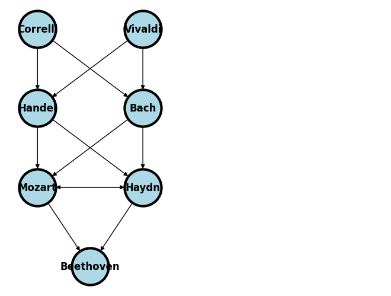

networks#
Show code cell source
import networkx as nx
import matplotlib.pyplot as plt
#import numpy as np
#import sklearn as skl
#
#plt.figure(figsize=[2, 2])
G = nx.DiGraph()
G.add_node("Correlli", pos = (0, 3) )
G.add_node("Vivaldi", pos = (1, 3) )
G.add_node("Handel", pos = (0, 2) )
G.add_node("Bach", pos = (1, 2) )
G.add_node("Mozart", pos = (0, 1) )
G.add_node("Haydn", pos = (1, 1) )
G.add_node("Beethoven", pos = (.5, 0))
G.add_edges_from([ ("Correlli", "Handel"), ("Correlli", "Bach"), ("Vivaldi", "Handel"), ("Vivaldi", "Bach")])
G.add_edges_from([("Handel", "Mozart"), ("Handel", "Haydn"), ("Bach", "Mozart"), ("Bach", "Haydn"), ("Haydn", "Mozart"), ("Mozart","Haydn")])
G.add_edges_from([("Mozart", "Beethoven"), ("Haydn", "Beethoven")])
nx.draw(G,
nx.get_node_attributes(G, 'pos'),
with_labels=True,
font_weight='bold',
node_size = 2000,
node_color = "lightblue",
linewidths = 3)
ax= plt.gca()
ax.collections[0].set_edgecolor("#000000")
ax.set_xlim([-.3, 3.3])
ax.set_ylim([-.3, 3.3])
plt.show()
